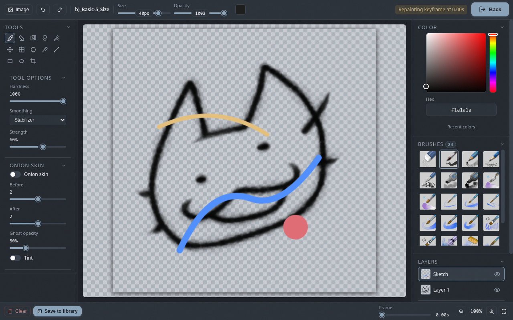

Paint
The built-in drawing tool: brushes, layers, color, selection, transform and saving drawings into your animation.
What it is
The paint tool is a full drawing workspace built into Khuwari, styled after Krita. You can sketch, ink and color right inside the editor, keep your work on separate layers, and drop the result straight into the timeline.
- Brushes, eraser, selection, transform, fill, shapes, line, eyedropper and crop tools.
- Krita-style layers: opacity, visibility and blend modes.
- Onion skinning, brush stabilizers and an HSV color wheel.
- Paint-made images stay editable - their layers are saved with the project.

Open the paint tool
There are three ways in:
- The
Paintbutton in the toolbar opens a blank canvas, ready for a new drawing. - Right-click a keyframe on the timeline and choose
Edit in paintto redraw that pose in place - the existing image stays editable on a layer. - When you add a finished drawing to the library it becomes an asset you can drag onto the timeline like any other image.
Leave the tool with Esc or the close button in the top-right corner. Editing a library image saves automatically when you close.
Tools
The tool docker on the left holds everything you need:
| Tool | Shortcut | What it does |
|---|---|---|
| Brush | B | paint with the current brush |
| Eraser | E | erase pixels |
| Select | S | rectangle, ellipse or lasso selection |
| Lasso | L | freehand selection |
| Wand | W | select matching pixels by color |
| Move | V | move content, duplicate with Alt |
| Transform | T | scale, rotate and move with handles |
| Fill | G | flood fill with tolerance |
| Color picker | I | pick a color from the canvas |
| Line | - | straight lines with the current brush |
| Rectangle | U | outline or filled rectangles |
| Ellipse | - | outline or filled ellipses |
| Crop | C | crop the canvas |
Shortcut letters only work while the paint tool is open, and not while you are typing in a field.
Brushes
The brush docker is a Krita-style preset list. The toolbar shows the current brush plus quick size and opacity sliders - drag to change, double-click to type an exact value.
- Hardness softens the brush edge.
- Smoothing adds a stabilizer (none, basic or stabilizer) to tame wobbly strokes.
- The bundle ships with Krita's default preset brushes (
.kpp), including their real brush tips, plus MyPaint (.myb) brushes. Drop more files intobrushes/and they are picked up automatically.
Layers
Every drawing can be split across layers, each with its own thumbnail, visibility, opacity and blend mode.
- Add, delete, move up and down, and merge a layer down from the layer toolbar.
- Double-click a layer name to rename it.
- Select a layer to paint on it. Alt-drag with the move tool duplicates content onto the same layer.
- Paint layers are saved with the image, so a drawing stays editable no matter how often you save, close and reopen the project.
Color
The color docker gives you an HSV color wheel - a saturation/value square and a hue slider - plus a hex field for exact colors. The color picker tool (I) grabs a color straight off the canvas.
Onion skin in paint
Turn on Onion skin in the tool docker to see the neighboring frames while you draw, with the same before/after counts, opacity and tint options as the main viewport.
Use the frame scrubber at the bottom of the workspace to move the playhead; the ghosts follow it so you can check the motion on either side of the frame you are drawing.
Canvas and image operations
The Image menu in the toolbar operates on the whole canvas:
- Flip horizontal or vertical
- Rotate 90 degrees clockwise or counter-clockwise
- Resize the canvas, with optional aspect-lock and scale-content
The crop tool (C) trims to a rectangle you drag; press Enter to apply or Esc to cancel. Double-click empty space to re-center the view, scroll to zoom, and hold the middle mouse button (or Shift with a brush) to pan.
Save your drawing
Save to library in the bottom status bar adds the drawing to the assets panel, where you can drag it onto the timeline like any image.
- When you are repainting a keyframe, saving updates that keyframe in place and the gaps around it regenerate.
- Editing a library image saves automatically when you close the tool.
- Brand-new drawings ask for a name the first time you add them.